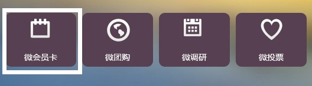
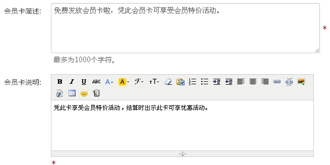
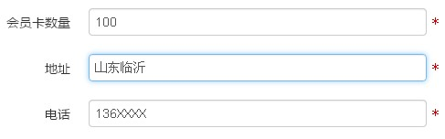
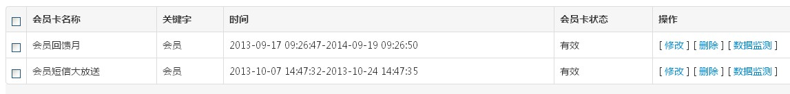
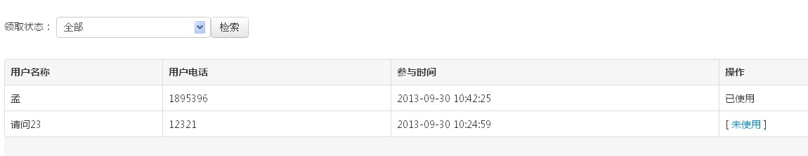

一、 点击“微会员卡”，进入微会员界面，点击“新增”来新建一张会员卡。如图：
二、进入新建活动的页面，设置活动名称、会员卡发送的时间、活动logo等。图片建议700*380像素。如图：

三、填写活动简述等，如下
活动简述要让粉丝明白会员卡的优惠活动、使用说明、兑奖信息等。如图：
四、填写会员卡数量、公司地址和联系方式：
五、设置完毕后，还可以一览所有创建的活动，修改或删除已设置的活动。
六、接下来，通过操作中的“数据监测”可以获取参与活动的用户的信息和奖项的信息。
